Criando personagens para jogar na Sociedade Pathfinder
Criando conta na Paizo
Pagina inicial do site da
Paizo
Você deve clicar em
Sign In
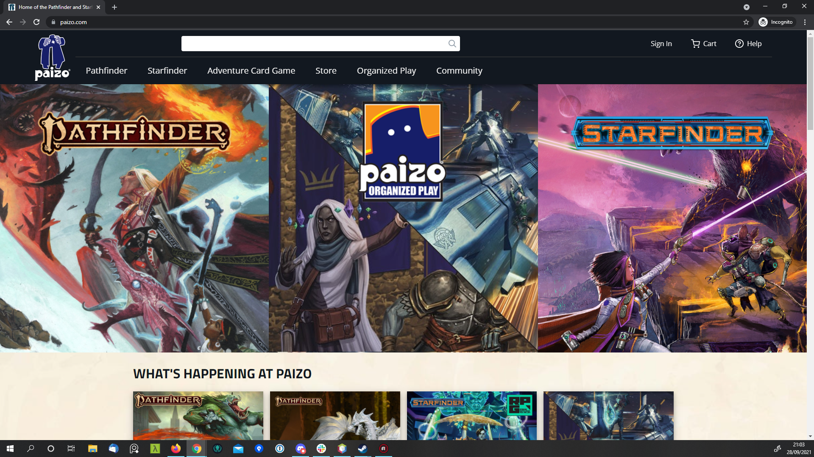
Ao clicar em
Sign In
na página inicial da Paizo você é levado para a página de login ou criar nova conta
Se já tiver cadastro na Paizo preencha os campos de email e senha e entre na sua conta
Se ainda não tiver cadastro na Paizo clique no botão
Create New Account
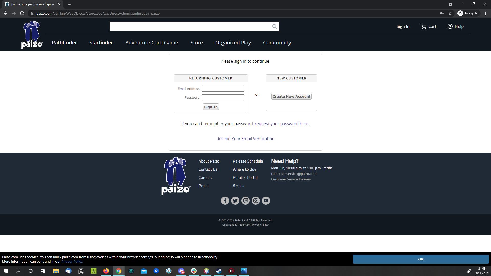
Preecha os dados da sua data de nascimento
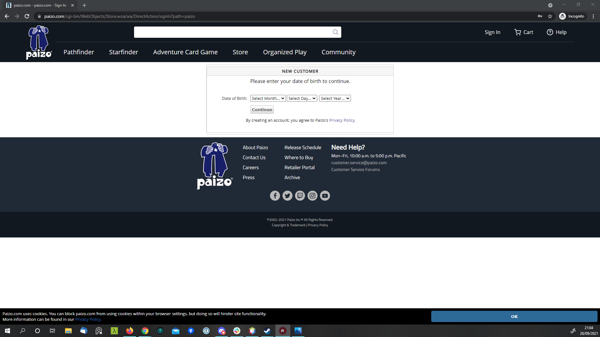
Preecha os dados de nome, sobrenome, email e confirme o email depois clique em
Create New Account
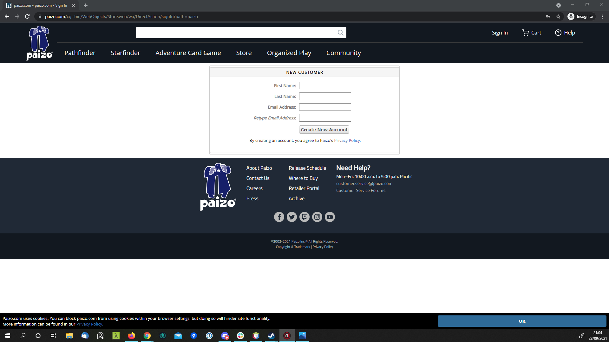
Criando personagem
Entre na página inicial do site da
Paizo
e faça o processo de
Sign In
Clique no botão
My Account
e acesse o menu
Organized Play
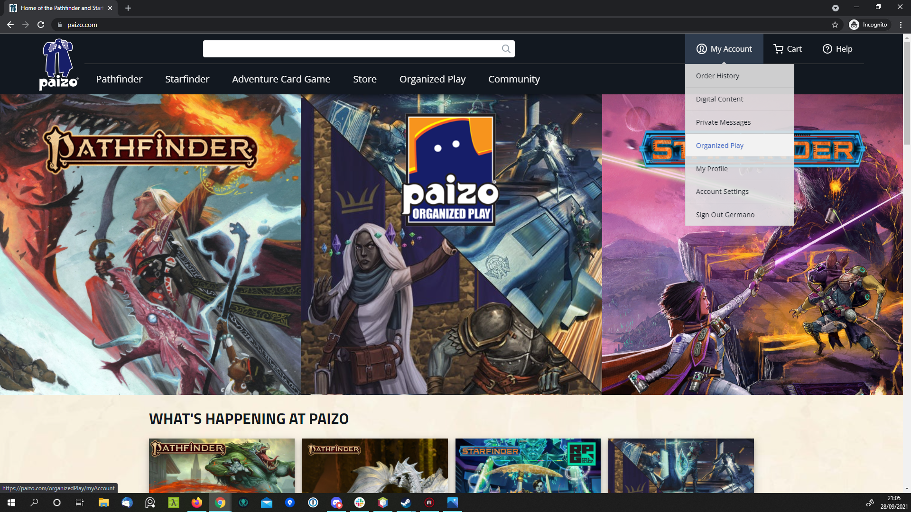
Navegue até o final da página e clique no botão
Register a New Pathfinder Society (second edition) Character
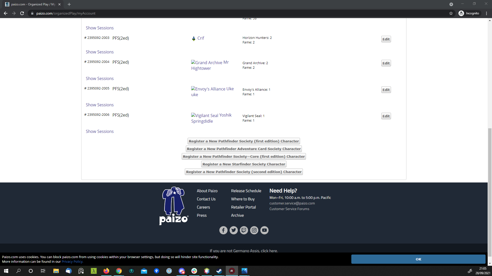
Preencha os dados seu personagem os únicos que são realmente obrigatórios são o
nome do personagem (Character Name)
e a
Facção (Faction)
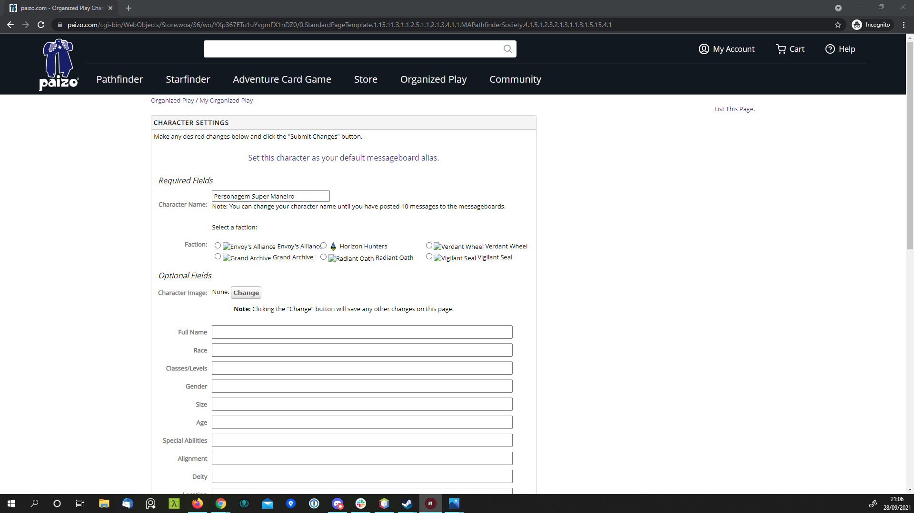
Após preencher os dado clique em
Submit Changes
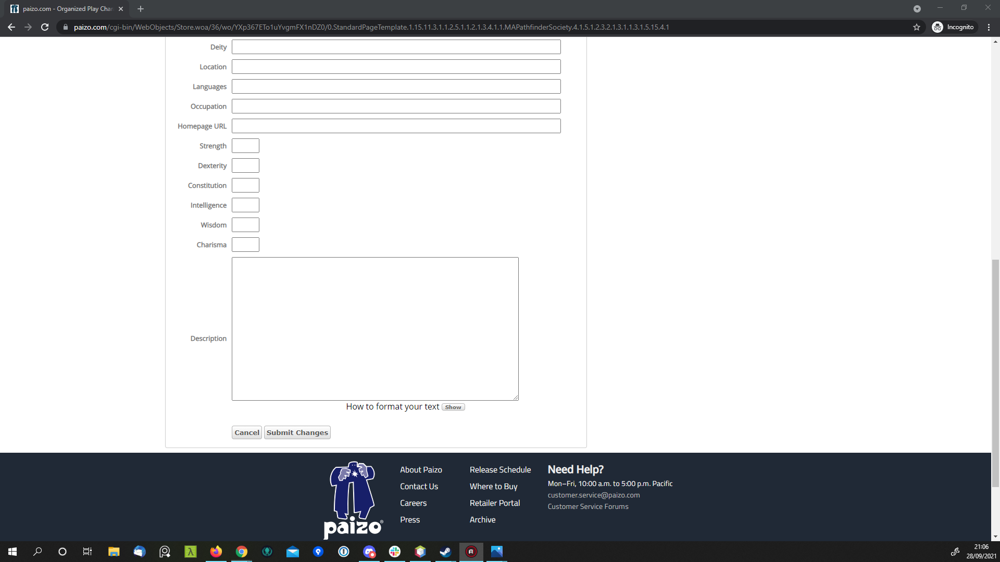
Se você for escolher um avatar para o seu personagem, você só pode escolher entre as imagens disponibilizadas pela Paizo
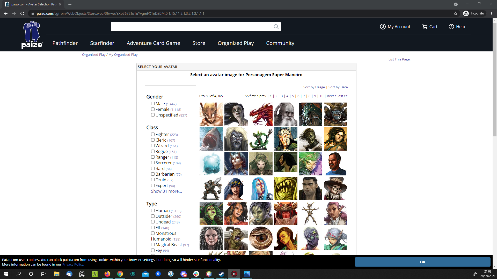
Um possível erro que pode acontecer é o da imagem abaixo, quando você tenta usar um nome de personagem que já está sendo usado por outro usuário
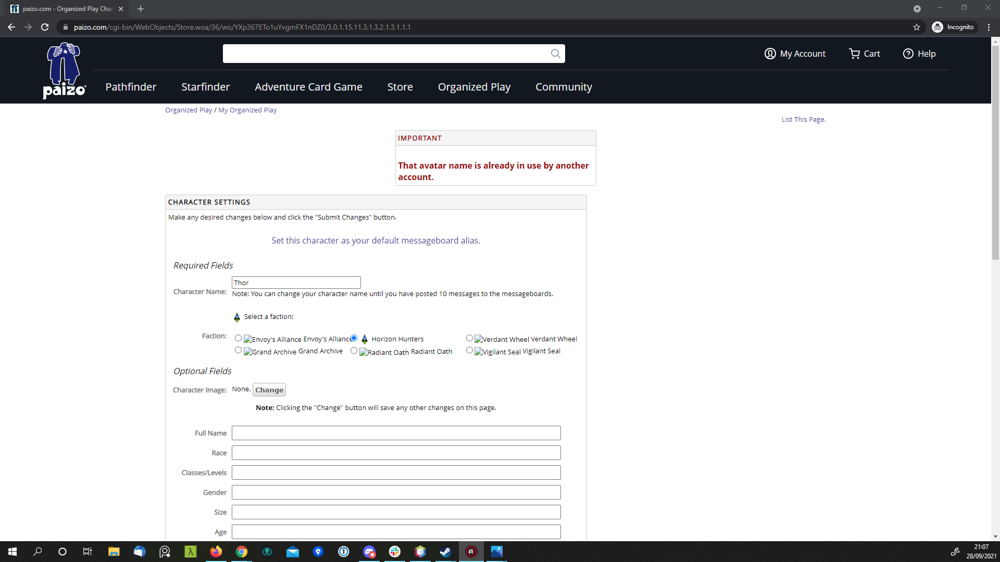
Pronto agora você já pode ver seus personagens cadastrados e pode castrar outros e cadastrar personagens para Pathfinder 1e, Starfinder
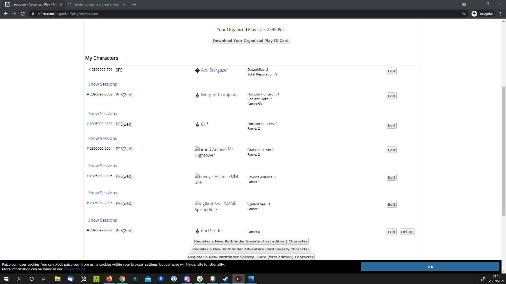